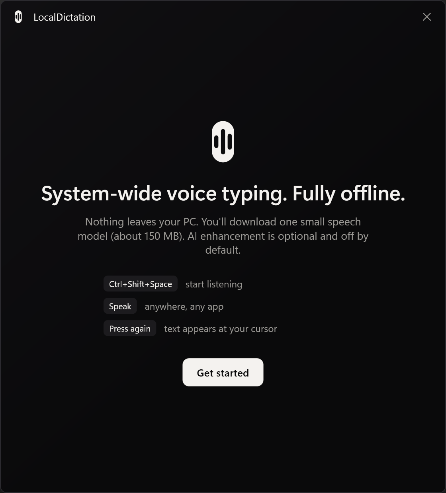
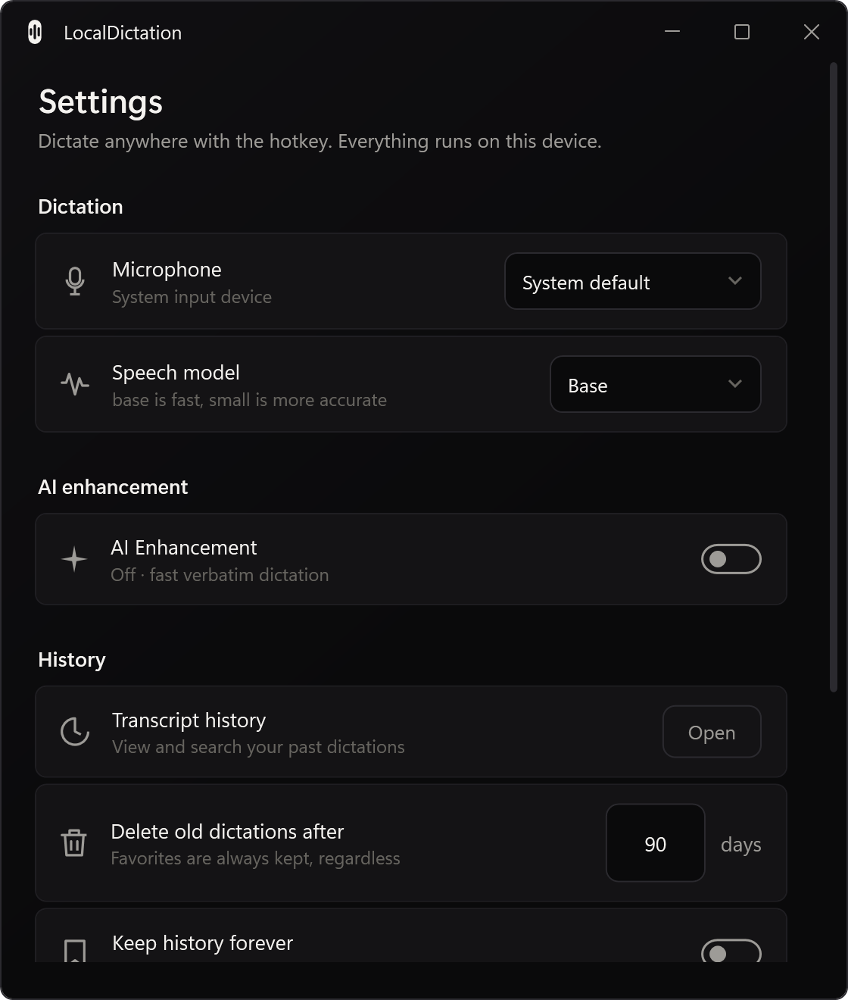
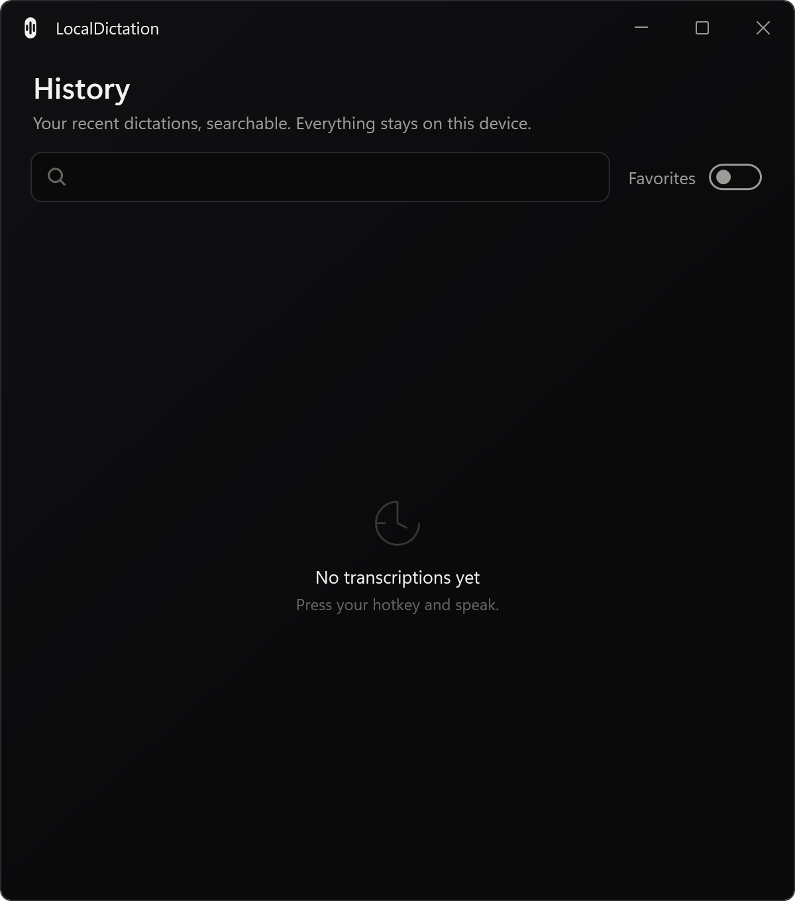
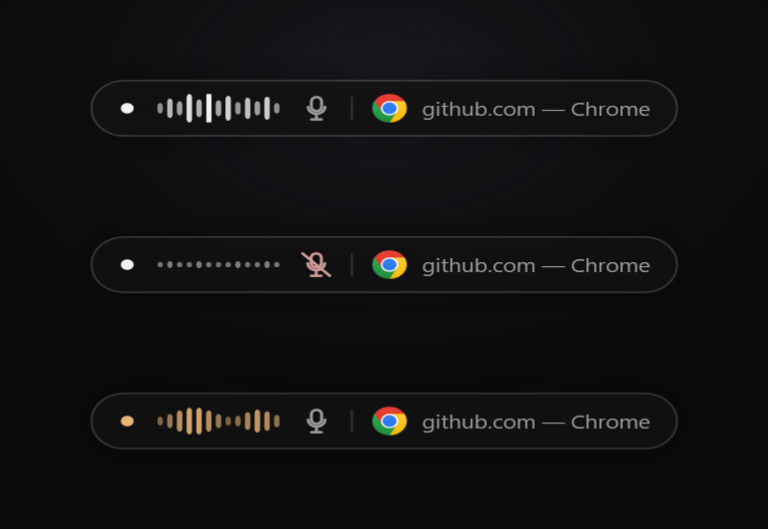

Developer Documentation
A system-wide, fully offline AI voice-dictation app for Windows. Press a hotkey anywhere, speak, and your words are transcribed locally with Whisper, optionally refined by a local LLM, and inserted into the focused control. This page is the engineering tour: the architecture, the end-to-end flow, each subsystem, and how it ships.
Overview
Speech recognition and AI both run on-device; nothing is sent to the cloud, no account is required, and audio is discarded after transcription. The app is tuned for CPU-only laptops and stays out of the way — it lives in the tray and reacts to a global hotkey.
Whisper.net for speech and Ollama for the optional LLM both run locally. No internet needed after the one-time model download.
Password-field detection, per-app blocklists, and a "never touch clipboard" mode. History is stored locally in SQLite.
The default is fast, verbatim Whisper output. LLM cleanup is off by default and adds ~1s when enabled.
Every subsystem sits behind an interface and is swapped via DI, so speech engines, output targets and stores are replaceable.
Architecture
Dependencies point inward only — Domain depends on nothing; Application defines the ports; Infrastructure and Desktop implement them. This rule is enforced in CI by NetArchTest, so an accidental dependency from the domain outward fails the build.
| Project | Responsibility |
|---|---|
| LocalDictation.Domain | Entities & enums — AudioClip, Transcript, HistoryEntry, SpeechModelSize, ProcessingMode. No dependencies. |
| LocalDictation.Application | Port interfaces (ISpeechEngine, IOllamaLifecycle, IAudioCaptureService, IOverlayController, ISpeechModelManager…), AppSettings, and the DictationPipeline. |
| LocalDictation.Infrastructure | Windows adapters: WhisperNetEngine, NAudioCaptureService, OllamaLifecycle + OllamaTextProcessor, SpeechModelManager, Win32 interop (hotkey, SendInput, UIA), SQLite history, AppPaths. |
| LocalDictation.Desktop | WPF shell: composition root (App.xaml.cs), DictationController, capsule overlay, tray, onboarding, control panel & history, view models. |
| LocalDictation.Shared | Result<T> and guard helpers. |
| LocalDictation.Evals | Offline WER / latency / LLM evaluation harness with TTS-synthesized fixtures. |
Domain ◄── Application ◄── Infrastructure
▲ ▲
└──── Desktop ────┘ (composition root wires adapters to ports)
How it works
The interaction is a toggle: press Ctrl+Shift+Space to start, press again to send. ESC cancels.
VAD auto-stop is off by default so natural pauses never cut you off.
RegisterHotKey + a message hook wake the DictationController, which inspects the focused control via UI Automation.IsPassword) or a blocklisted app, dictation is refused before any audio is captured.NAudioCaptureService records 16 kHz mono and streams a 13-band FFT to the waveform.DictationPipeline runs WhisperNetEngine. Non-speech markers like [BLANK_AUDIO] are filtered out.OllamaTextProcessor post-processes the text (grammar, rewrite, translate…). The pipeline degrades to raw text if the LLM is unavailable.OutputRouter inserts via a prioritised chain — clipboard → SendInput → UIA — and leaves the final text on the clipboard for re-pasting. If the originally-focused window is no longer in front (you clicked away), it opens the translucent-glass floating editor instead of typing into the wrong app.Subsystems
| Port (Application) | Adapter (Infrastructure/Desktop) | Notes |
|---|---|---|
ISpeechEngine | WhisperNetEngine | whisper.cpp/GGML via Whisper.net; hardware-aware model tier; lazy warm-up. |
ISpeechModelManager | SpeechModelManager | Downloads & verifies ggml models from Hugging Face with progress; recommends a tier for the hardware. |
IAudioCaptureService | NAudioCaptureService | NAudio WaveInEvent; emits input level + 13-band spectrum for the meter. |
ITextProcessor / IOllamaLifecycle | OllamaTextProcessor / OllamaLifecycle | Local LLM behind the AI toggle; auto-installs Ollama & pulls the model on first enable. |
IOverlayController | OverlayController | The non-activating acrylic capsule with the frequency-reactive waveform and gold processing state. |
IHistoryRepository | SqliteHistoryRepository | SQLite + FTS5 full-text search, favorites, and retention pruning (favorites kept indefinitely). |
| Output targets | OutputRouter + clipboard/SendInput/UIA | Prioritised insertion with clipboard save/restore and a floating-editor fallback. |




Design language
Near-black grounds, a warm off-white, and white as the only accent — with one deliberate
exception: a soft gold (#E8B478) marks the transient "processing" state (the capsule's
transcribe shimmer and download progress). The app mark is a vertical capsule with a waveform cut through it in
negative space — the same shape as the on-screen listening pill, so the tray icon, windows and overlay read as
one identity. The control panel and history follow the Win11 SettingsCard pattern with immediate-apply.
Distribution & updates
Shipping a WPF app plus large models is a packaging problem. The solution is a small installer that fetches the heavy assets on demand:
Setup.exe that installs without admin rights and auto-updates from GitHub Releases.App data (models, settings, history) lives in %LocalAppData%\LocalDictation as siblings of the
versioned current\ directory Velopack replaces on update, so downloads survive updates and release
packages stay small. The rationale for every such decision is captured in the
Architecture Decision Records.
Build & evaluate
git clone https://github.com/KunalKumarkkr01/LocalDictation.git cd LocalDictation ./scripts/setup-models.ps1 # download Whisper models dotnet run --project src/LocalDictation.Desktop # run the tray app dotnet test LocalDictation.sln # 17 unit + architecture tests dotnet run --project src/LocalDictation.Evals # WER / latency / LLM eval
The eval harness synthesizes known sentences via Windows TTS, runs them through the real Whisper engine, and
measures accuracy + latency. Latest run: 0.0% WER on both the base and
small models. Requires the .NET 8 SDK (pinned to 8.0.417 via global.json).